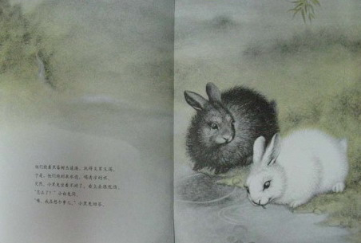

黑兔与白兔
一本笔触细腻、内容温暖的“爱的故事”，半个世纪以来，这两只拥有清澈眼神和
温柔心灵的小兔子感动了无数的大人和孩子，把纯真、永恒的爱传播到全世界。
希望所有的小朋友，都能像故事中的黑兔与白兔一样，永远过着无忧无虑的快乐的生活~~
在一个好大好大的森林里，住着两只小兔子，一只是黑兔，一只是白兔。
每天早晨，他们从床上跳起来，跳进清晨的阳光里。
他们整天快快乐乐地一起玩。
“咱们来玩跳山羊吧。”小白兔说。
“好，来！”小黑兔说着，往前一蹬，一蹦，一跃。
正好从小白兔的背上跳过。
小白兔往前一蹬，一蹦，一跃，
也正好从小黑兔的背上跳过。
我妈妈是个手艺特好的大厨师！
玩了一会儿，小黑兔坐着不动了，看上去很忧伤。
“怎么了？”小白兔问。
“噢，我在想个事儿。”小黑兔回答。
他们在金凤花和雏菊花丛中玩起了捉迷藏。
后来，小白兔想玩找橡果。
玩了一会儿，小黑兔坐着不动了，看上去很忧伤。
“怎么了？”小白兔问。
“噢，我在想个事儿。”小黑兔回答。

他们绕着黑莓树丛追逐，玩得又累又渴。
于是，他们跑到泉水边，喝清凉的水。
突然，小黑兔坐着不动了，看上去很忧伤。
“怎么了？”小白兔问。
“噢，我在想个事儿。”小黑兔回答。
他们跳过雏菊花，钻过三叶草。
“我饿了。”小白兔说。
于是他们停下来，大口大口地吃起蒲公英。
过了一会儿，小黑兔不吃了，他坐着不动，看上去很忧伤
“怎么了？”小白兔问。
“我在想个事儿。”小黑兔回答。
“你一直在想什么呢？”小白兔问。
“我在许愿。”小黑兔回答。
“你许了什么愿呢？”小白兔问。
“我希望能一直和你在一起，永远不分开。”小黑兔回答。
小白兔瞪大了眼睛，很用心地想了又想。
“那你要更努力，更努力地许愿才行啊。”
小白兔说。
小黑兔瞪大了眼睛，很用心地想了又想。
“我希望你全部属于我。”
小黑兔说。
“你真的这样想吗？”小白兔问。
“我真的这样想。”小黑兔回答。
“那我愿意全部属于你。”小白兔问。
“永远？永远？永远？”小黑兔问。
“永远！永远！永远！”小白兔回答。
小白兔温柔地伸出手，小黑兔紧紧地握住了它。
他们摘下蒲公英花，插在耳边。
所有的兔子都跑来看这对幸福的兔子。
他们围着小黑兔和小白兔，跳起来婚礼圆舞曲。
森林里的其他动物也都跑来看这场婚礼舞会。
月光下，他们一起跳舞，直到天亮。
就这样，两只小兔子结婚了，一起快乐地生活在大森林里。
他们天天在一起，吃蒲公英，玩跳山羊，在雏菊花中追逐，
一起找橡果。
小黑兔再也不忧伤了。